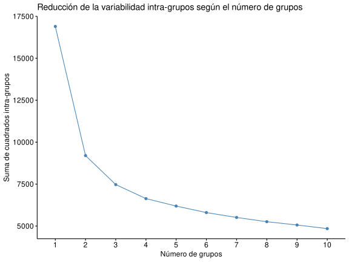

Definición de estadios de Glaucoma (ojos izquierdos)
2020-02-20
Objetivo
En este estudio se pretende definir distintos grupos de gravedad de glaucoma (estadíos de desarrollo de la enfermedad) en función del grosor de los anillos neuroretinianos, mediante la técnica de las \(k\)-medias.
Correlación

Análisis de componentes principales

Se observa que la mayor parte de la variabilidad la explica la primera dimensión. Ello es debido a la alta correlación entre los sectores de los distintos anillos.


Se observa que los sectores que más peso tienen en el primer componente principal son el global y el temporal inferior de todos los anillos. Estas variables son precisamente las más correlacionadas entre si tal y como se aprecia en el siguente gráfico.
Estadios

A la vista del gráfico se decide crear 4 grupos, ya que la reducción de la variabilidad intra-grupo a partir de 4 grupos no es significativa.


Estadísticos de la distribución de AnilloBMO.G, AnilloBMO.TI, Anillo3.5.G y Anillo3.5.TI por Estadios stages
| Sector | Estadio | n | mean | sd | se | lower.ci | upper.ci |
|---|---|---|---|---|---|---|---|
| AnilloBMO.G | Sano | 765 | 0.34 | 1.037 | 0.0375 | 0.2664 | 0.4136 |
| AnilloBMO.G | I | 51 | -0.3516 | 0.9794 | 0.1372 | -0.6271 | -0.07616 |
| AnilloBMO.G | II | 78 | -1.472 | 0.8091 | 0.09162 | -1.654 | -1.289 |
| AnilloBMO.G | III | 56 | -1.976 | 0.8783 | 0.1174 | -2.211 | -1.74 |
| AnilloBMO.G | IV | 41 | -3.188 | 0.8738 | 0.1365 | -3.464 | -2.912 |
| AnilloBMO.TI | Sano | 765 | 0.2184 | 0.9992 | 0.03613 | 0.1475 | 0.2893 |
| AnilloBMO.TI | I | 51 | -0.2698 | 0.9536 | 0.1335 | -0.538 | -0.001556 |
| AnilloBMO.TI | II | 78 | -1.23 | 0.9312 | 0.1054 | -1.44 | -1.02 |
| AnilloBMO.TI | III | 56 | -2.325 | 1.007 | 0.1346 | -2.595 | -2.055 |
| AnilloBMO.TI | IV | 41 | -3.377 | 0.8779 | 0.1371 | -3.654 | -3.1 |
| Anillo3.5.G | Sano | 765 | 0.3165 | 1.044 | 0.03776 | 0.2423 | 0.3906 |
| Anillo3.5.G | I | 51 | 0.6 | 0.7404 | 0.1037 | 0.3918 | 0.8082 |
| Anillo3.5.G | II | 78 | -1.337 | 0.7206 | 0.08159 | -1.5 | -1.175 |
| Anillo3.5.G | III | 56 | -3.129 | 0.7729 | 0.1033 | -3.336 | -2.922 |
| Anillo3.5.G | IV | 41 | -5.493 | 1.132 | 0.1768 | -5.85 | -5.136 |
| Anillo3.5.TI | Sano | 765 | 0.07504 | 1.114 | 0.04029 | -0.004048 | 0.1541 |
| Anillo3.5.TI | I | 51 | 0.05274 | 0.8429 | 0.118 | -0.1843 | 0.2898 |
| Anillo3.5.TI | II | 78 | -1.018 | 1.04 | 0.1178 | -1.252 | -0.7831 |
| Anillo3.5.TI | III | 56 | -3.654 | 1.259 | 0.1682 | -3.991 | -3.317 |
| Anillo3.5.TI | IV | 41 | -5.305 | 1.117 | 0.1745 | -5.658 | -4.953 |